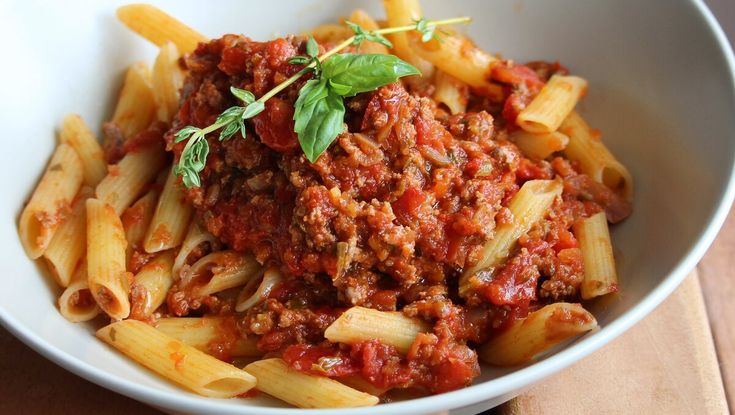

I have found myself making daily visits to Joseph's Classic Market these days and creating new recipes. Not only do we have amazing markets here in Palm Beach Gardens but our farmers markets are spectacular. I got 4 Cubanelle peppers and grilled 2 with our steak dinner. Looking at the remaining 2, this dish came to me. Enjoy with your favorite pasta, spaghetti squash, or sweet potato noodles.
Heat olive oil in a large saucepan over medium heat. Add Cubanelle peppers; cook and stir until softened, about 5 minutes. Stir in garlic; cook until fragrant, about 30 seconds.
Stir veal and chuck into the saucepan; cook, breaking up gently with a wooden spoon, until browned, about 10 minutes. Add crushed tomatoes, Italian seasoning, salt, and pepper. Bring sauce to a boil; reduce heat to low and simmer, covered, until flavors combine, about 30 minutes.
Substitute coconut oil for the olive oil if desired.